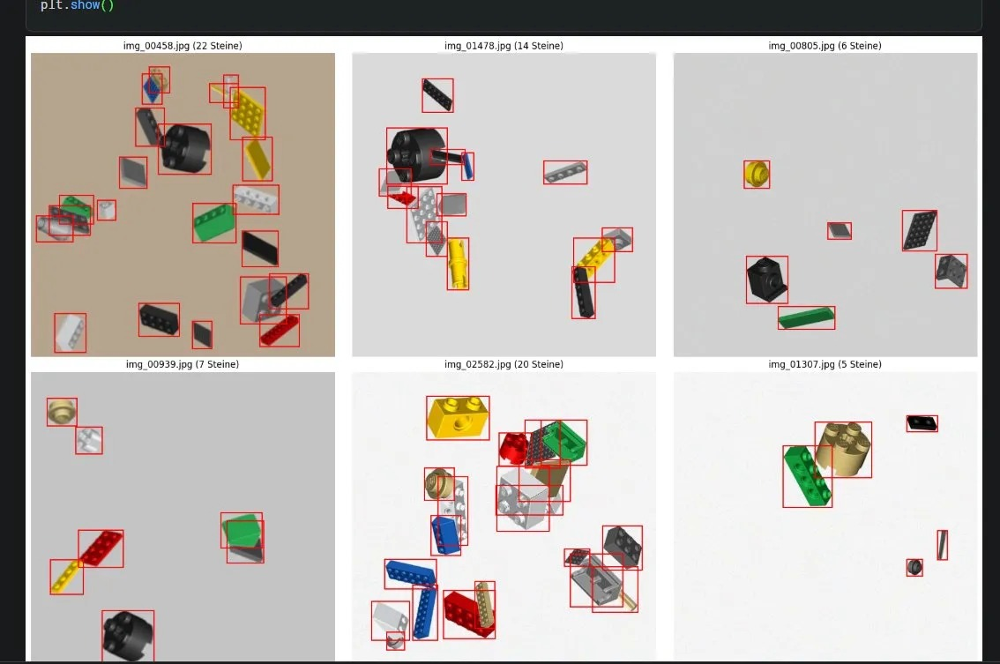

Software-Hub develops an AI-based Brick Recognition & Counting System that detects, counts and classifies mixed plastic building bricks from camera images. The goal is to help collectors, resellers and small businesses automate sorting and inventory workflows.
// Product
The product is designed to turn camera images of mixed building bricks into structured inventory data. Instead of manually counting parts, users can upload or capture images and receive detected objects, estimated quantities and classification results.
We are building the first version of the recognition pipeline: image capture, preprocessing, object detection, duplicate-safe counting, part classification, result correction and exportable inventory data. The first target is a practical MVP for real-world brick sorting workflows.
Images are captured from a fixed camera setup or uploaded through a web interface.
The system detects visible brick parts and separates them from the background.
Detected parts are counted while avoiding duplicate counting across processing steps.
Results are converted into structured inventory data for dashboards, APIs or CSV exports.
// MVP Mockup
The first MVP is planned as a web-based workflow: users upload or capture an image, the recognition pipeline detects visible parts, and the dashboard returns counts and structured inventory data for review.

Prototype detection output: early test images with bounding boxes around visible brick parts and estimated object counts per image. This supports the MVP recognition pipeline and will be improved with better datasets, classification and duplicate-safe counting.
// Technology
Software-Hub combines software engineering, computer vision and cloud infrastructure to build a scalable recognition workflow.
Detection and classification of plastic building bricks from images using image preprocessing and ML-based recognition.
Model experiments, dataset preparation, evaluation and iterative training for better recognition quality.
Scalable APIs, storage and asynchronous processing pipelines for image uploads and recognition jobs.
A web interface for reviewing detections, correcting results and exporting structured inventory data.
// AWS Use Case
AWS credits would help us build and test the MVP infrastructure without overcommitting early-stage startup budget. The architecture is planned around scalable image processing, serverless APIs, data storage and monitoring.
Store uploaded images, generated annotations, model outputs and inventory exports in a structured way.
Run lightweight API and job-triggering logic for uploads, result retrieval and user workflows.
Test AI and ML workflows for recognition, classification and future model improvements.
Store users, recognition jobs, correction history and inventory result metadata.
Package heavier recognition jobs as containers for repeatable processing and future scaling.
Track system health, application logs and AWS spending while the MVP is developed.
// Customers
The first target market is people and small businesses that handle many mixed building bricks and need faster counting, sorting and inventory preparation.
Private collectors who want to organize, identify and count mixed parts faster.
Small resellers who need structured inventory data for used brick lots.
Workflows where parts are poured onto a fixed background and analyzed by camera.
// Product status
Software-Hub is currently in the early MVP phase. The goal is to validate the recognition workflow first, then improve accuracy, usability and deployment scalability.
Build the first image preprocessing, object detection and duplicate-safe counting workflow for controlled camera images.
Create a web interface where users can review detections, correct results and export inventory data.
Deploy scalable storage, APIs, background processing and monitoring for real test users.
// Company
Software-Hub is an early-stage software project based in Styria, Austria. We develop custom software solutions and are currently focused on an AI-powered Brick Recognition & Counting System.
The project is in MVP development. Our technical background includes full-stack web development, backend systems, cloud infrastructure, container workflows and performance-focused software engineering.
For inquiries, partnership discussions or technical questions, contact us at office@software-hub.org.
// Imprint
This imprint provides basic contact and operator information for Software-Hub.
Software-Hub
Styria, Austria
Farch 2a
8741 Weißkirchen
Austria
Email: office@software-hub.org
Website: https://software-hub.org
Responsible for the content of this website: Software-Hub. The information on this website describes an early-stage MVP project and may be updated as the product develops.
// Legal & Contact
Software-Hub is operated from Styria, Austria. For business inquiries, product questions or AWS-related verification, please contact us by email.
Early-stage software project focused on AI-powered recognition systems and automation software.
Styria, Austria
office@software-hub.org
// Contact
Interested in the Brick Recognition & Counting System, cloud infrastructure or a collaboration? Contact Software-Hub.